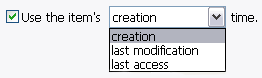
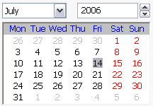
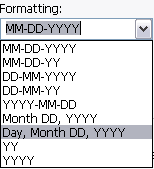
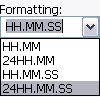
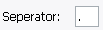

The Formating help button is a handy reference when creating your own date and
time formats.

You can get the date & time information from the item rather than setting your own.
All the formating will still work.
Note: On POSIX filesystems (Linux, OS X, BSD, etc), there is no creation time,
as this doesn't exist on these systems. Instead you will see Metadata change (ctime) which
is time of last change (but not neccessarily modified - i.e. changing permissions will update metadata,
but not modified)

Use the Calendar to specify your own date (defaults to current date).

These are all the built in date formats available. However, you can also use your
own formating, by simply entering in text in the text field.
Use the Seperator to specify how to seperate date fields when using the included
date formats.
The Time field displays the time the application was opened by default, but can be
changed by highlighting a field and using the up or down arrows.
The Set to now button sets the time to the current time.

These are all the built in time formats available. However, you can also use your
own formating, by simply entering in text in the text field.

Use the Seperator to specify how to seperate time fields when using the included
time formats.